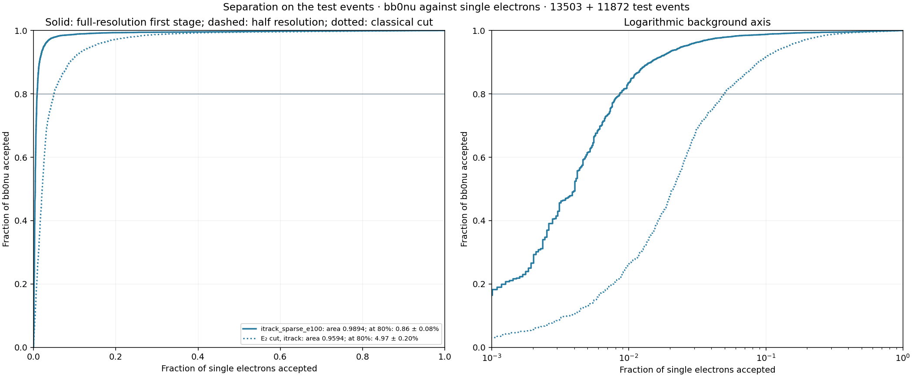
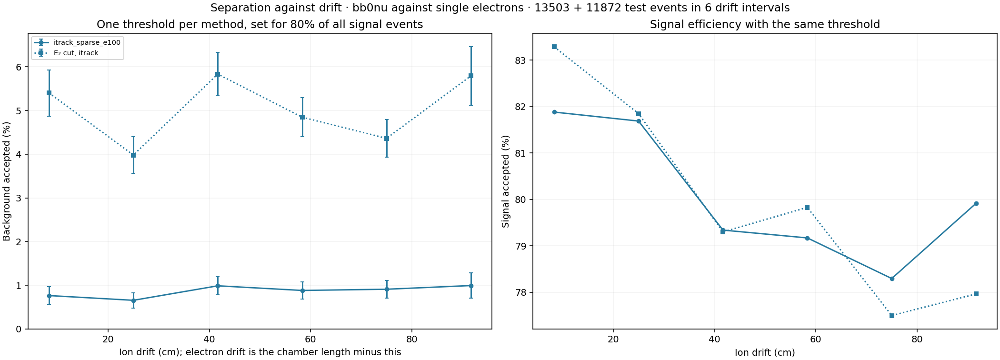
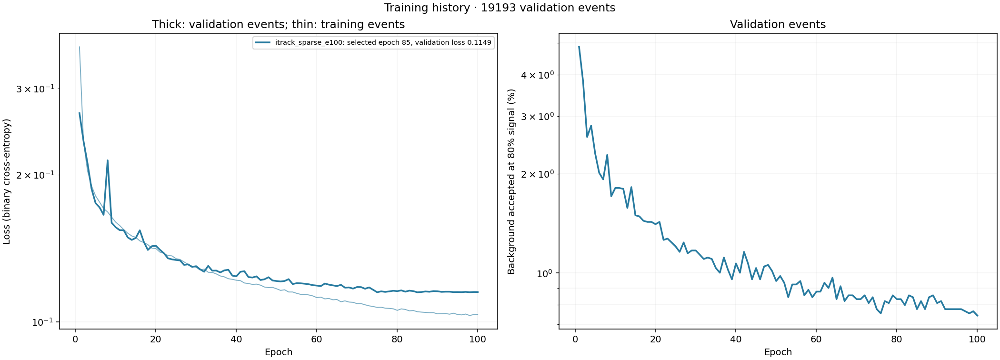
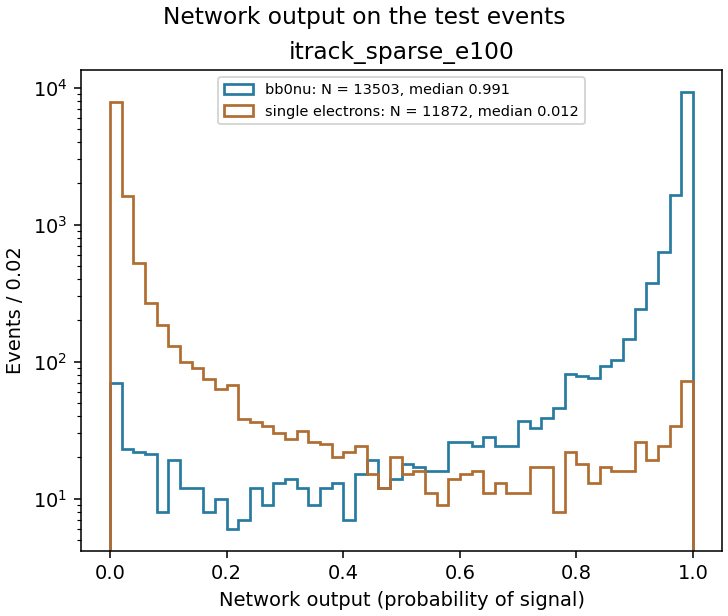

Samples II_L1000_D500_P2_bb0nu and II_L1000_D500_P2_single_electrons; iItaca II_L1000_D500_P2: ROI cut on the event energy, 2452.0306 to 2463.6294 keV; track selection of the itrack on the readout lattice (selected). Test batches [0, 1, 2, 3, 4, 5, 6, 7] (13503 + 11872 events), validation batches [8, 9, 10, 11, 12, 13]; the other batches train. Network and procedure: classification network.
An event is accepted when the network output exceeds a threshold; the threshold of each column keeps that fraction of the signal. The last rows apply the classical cut on E₂, the smaller endpoint energy of the main track, to the same test events. Errors are binomial.
| Training | Input | First stage | Training events | Selected epoch | Area | Background at 90% signal | Background at 80% signal | Background at 70% signal | Background at 60% signal | Time (min) |
|---|---|---|---|---|---|---|---|---|---|---|
| itrack_sparse_e100 | itrack | full | 144744 | 85 of 100 | 0.9894 | 1.45 ± 0.11% | 0.86 ± 0.08% | 0.63 ± 0.07% | 0.48 ± 0.06% | 70 |
| E₂ cut, itrack | itrack | 0.9594 | 8.80 ± 0.26% | 4.97 ± 0.20% | 3.27 ± 0.16% | 2.61 ± 0.15% |




Numerical results: itrack_sparse_e100.